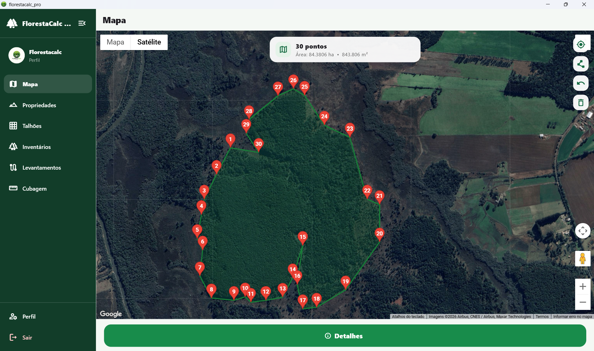

Propriedades e talhões
Cadastre propriedades, delimite áreas no mapa e organize seus talhões.
Inventário florestal, cubagem, levantamentos GPS, gestão de propriedades, talhões e relatórios profissionais em um único aplicativo.

Leve suas informações florestais para o computador e tenha ferramentas especializadas para organizar propriedades, talhões, levantamentos, inventários e cubagens.
O FlorestaCalc Pro reúne diferentes etapas do trabalho florestal em um único ambiente.
Ver na Microsoft StoreInstale o FlorestaCalc Pro diretamente pela Microsoft Store.
O FlorestaCalc Pro foi desenvolvido para facilitar atividades de campo, medições florestais, organização de áreas e geração de documentos técnicos.
Cadastre propriedades, delimite áreas no mapa e organize seus talhões.
Organize levantamentos, trajetos e pontos de referência das áreas.
Registre CAP, DAP, altura, quantidade, volume e outras informações do inventário.
Calcule volumes individuais e totais a partir das medições informadas.
Gere documentos técnicos e organize os resultados dos seus trabalhos.
Mantenha seus registros vinculados à conta e sincronize os dados.
A versão para Windows já está disponível. Acesse a página oficial do FlorestaCalc Pro na Microsoft Store.
Baixar na Microsoft StoreConsulte como os dados são tratados, as condições de utilização do aplicativo e as instruções para exclusão de conta.
Para suporte técnico, dúvidas sobre privacidade ou solicitações relacionadas à conta, entre em contato por e-mail.
forestmeasurepro@gmail.com